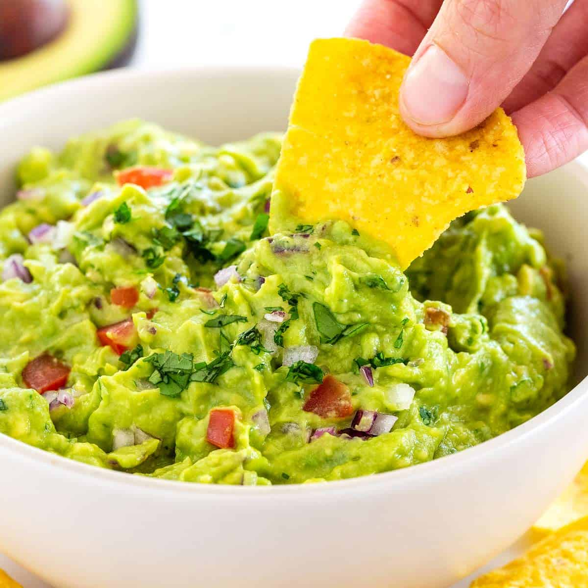

The Best Guacamole
Ingredients
- 5 Avocado
- 5 Roma Tomatoes
- 1/4 Onion
- Cilantro
- Lemon Juice
- Cayenne Pepper
- Salt
Directions
- Peel, pit, and mash avocado in a medium bowl
- Add lemon juice to prevent browning
- Chop tomato, onion, pepper, and cilantro
- Add chopped ingredients to bowl with the mashed avocado
- Add salt to mixture
- Mix ingredients evenly
- Ready to serve!

Recommended Recipes
Authentic Mexican Sopes
Salsa Verde
Homemade Churros